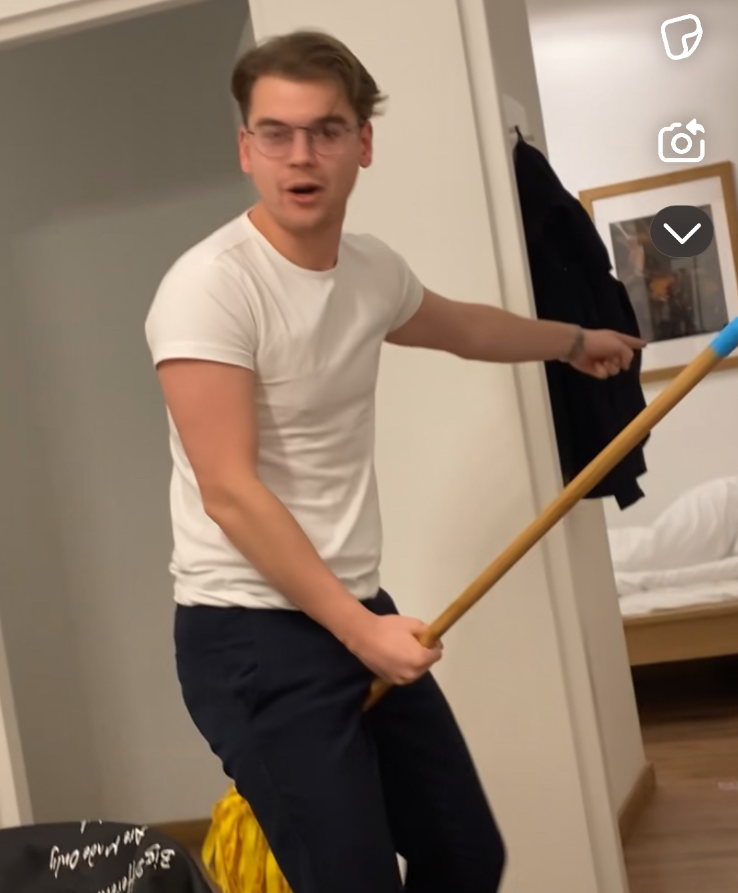

Pepijn
Dit is Pepijn, 22 jaar oud en onze famous tiktokker van de groep. Hij is dan ook gek viraal gegaan doormiddel van zijn leuke sketches. ( volg je hem nog niet? @zopepijntiktok ). Hij lijkt alles voor elkaar te hebben. Vriendin, Famous en genoeg pap. Tot er een aantal vodka sprites in zijn keel gaan. dan word hij opeens de gekste van de dansvloer